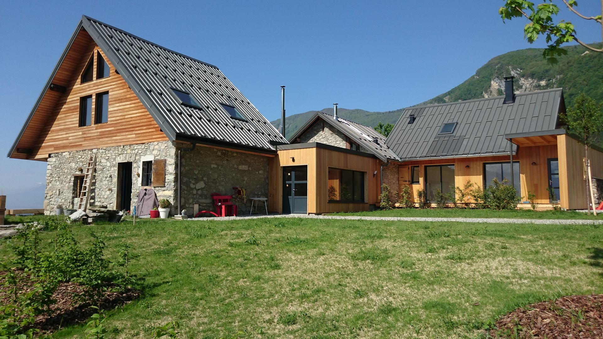
Accueil · Le hameau
Le hameau, la piscine et la vue
Sept maisons de vigne à La Plantaz, au-dessus de Saint-Pierre-d’Albigny, devenues une maison d’hôtes.
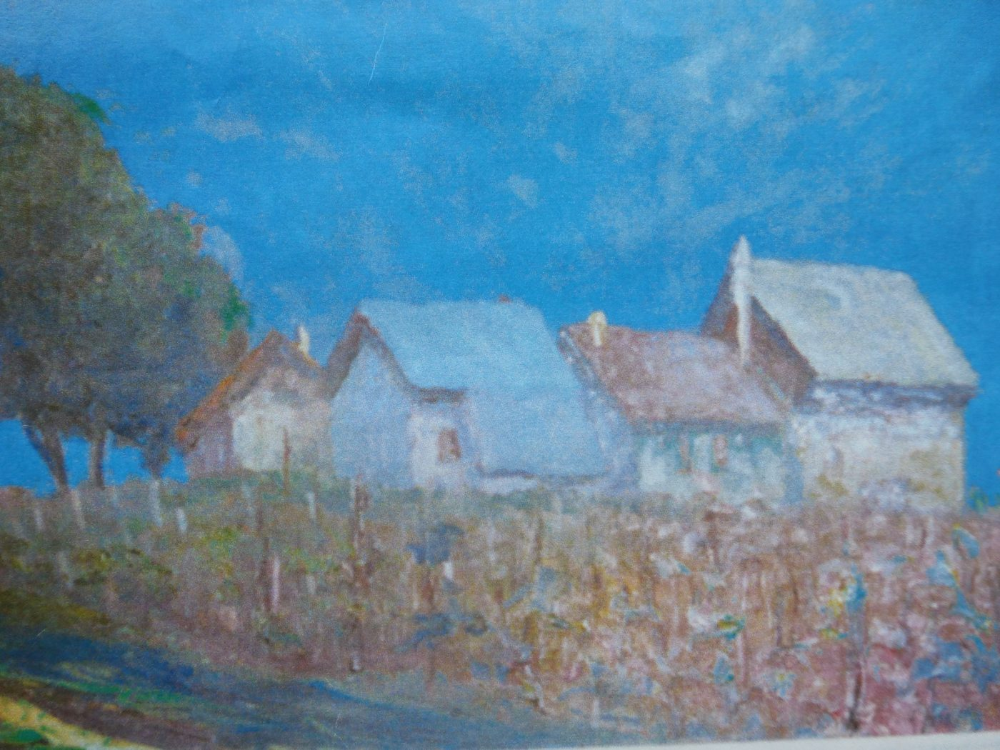
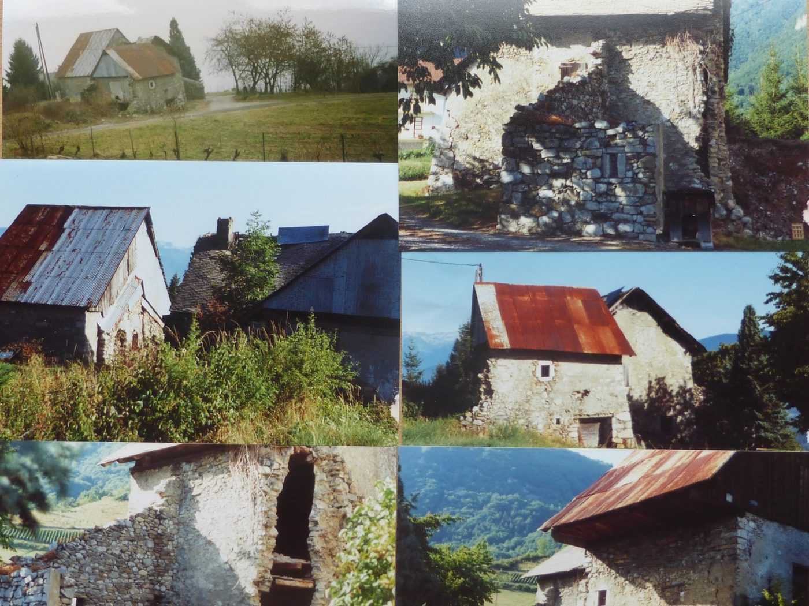
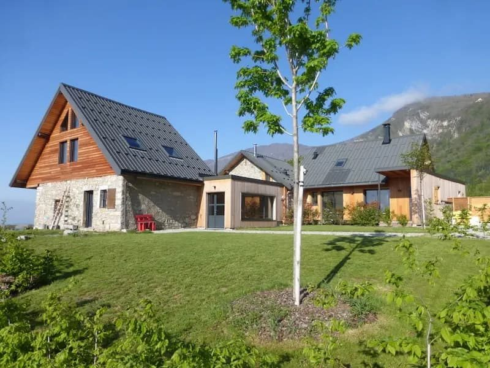
La petite maison dans les vignes
Le sartôt est l’habitat typique de la Combe de Savoie : une petite maison posée dans les vignes, « l’endroit qui sert à tout ». Il témoigne du patrimoine viticole savoyard.
Aux 7 Sartôts, cas singulier, ils sont sept, regroupés en mini hameau.
De la vigne à la maison d’hôtes
- AutrefoisLes maisons des vignerons
Sept sartôts regroupés en mini hameau, où venaient travailler et vivre les vignerons du massif des Bauges.
- Après-guerreL’abandon
La vigne est arrachée après la Seconde Guerre mondiale et les sartôts sont laissés à l’abandon.
- 1955Une histoire de famille
Les sartôts deviennent propriété familiale. Le patrimoine est sauvegardé.
- 2017La rénovation
Avec AVB Architectes, les sartôts deviennent gîtes et chambre d’hôtes : pierre, chaux, chanvre, bois et métal.
- Aujourd’huiLes 7 Sartôts revivent
Trois hébergements, une piscine et une table d’hôtes, face aux Alpes.
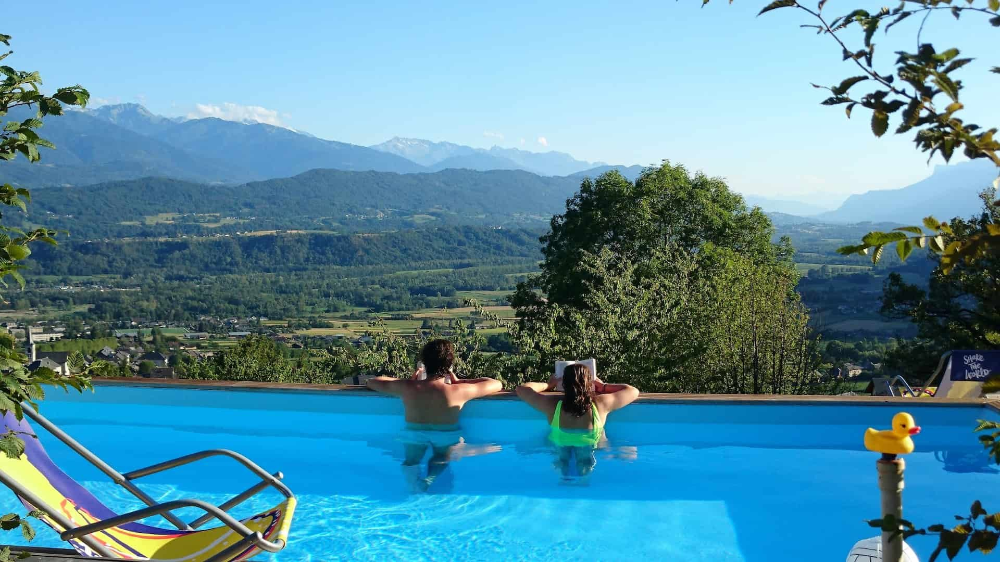
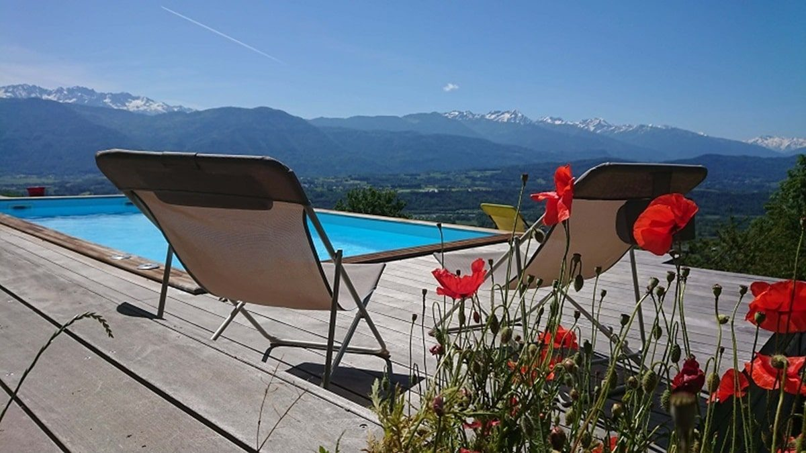
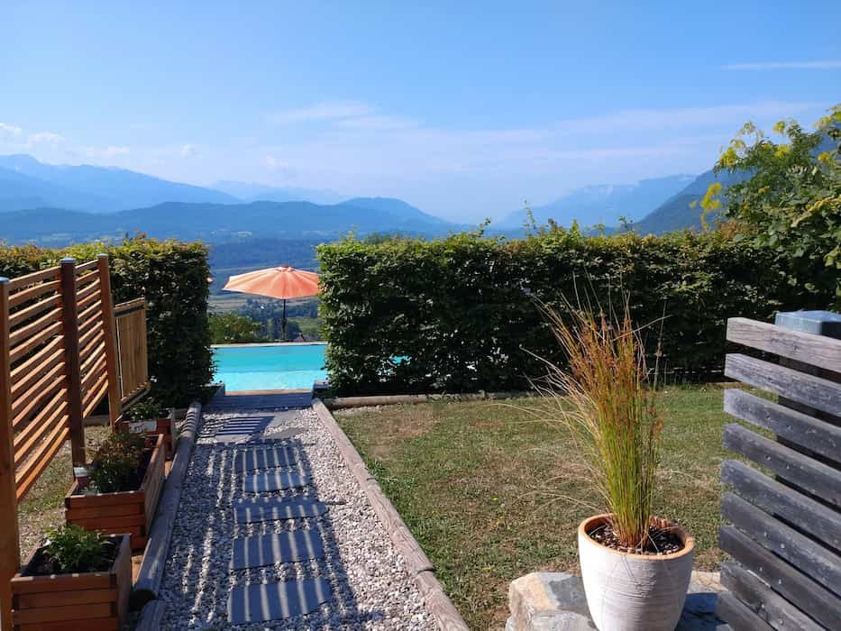
Le calme, entre adultes
Son solarium fait face aux massifs de la Lauzière, de Belledonne, du Vercors et de la Chartreuse. C’est un espace réservé aux adultes, pour une sérénité absolue.
Ouverte tous les jours de juin à fin septembre, de 11 h 15 à 19 h, sauf intempéries ou maintenance.
Envie d’autres baignades ? Le lac de Carouge est à 5 km, la piscine municipale du village ouvre l’été et les plages des lacs du Bourget et d’Annecy sont à 45 et 47 km.
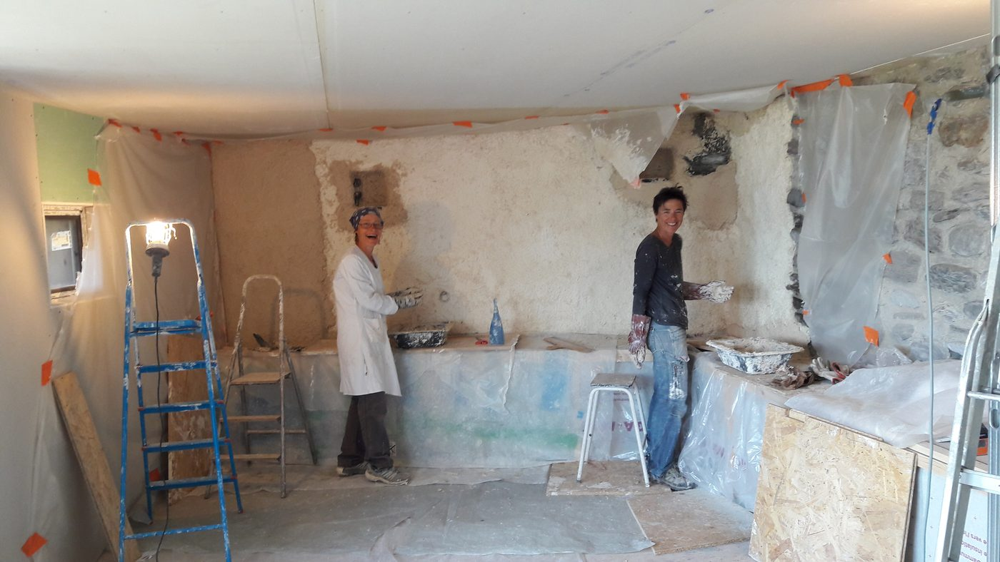
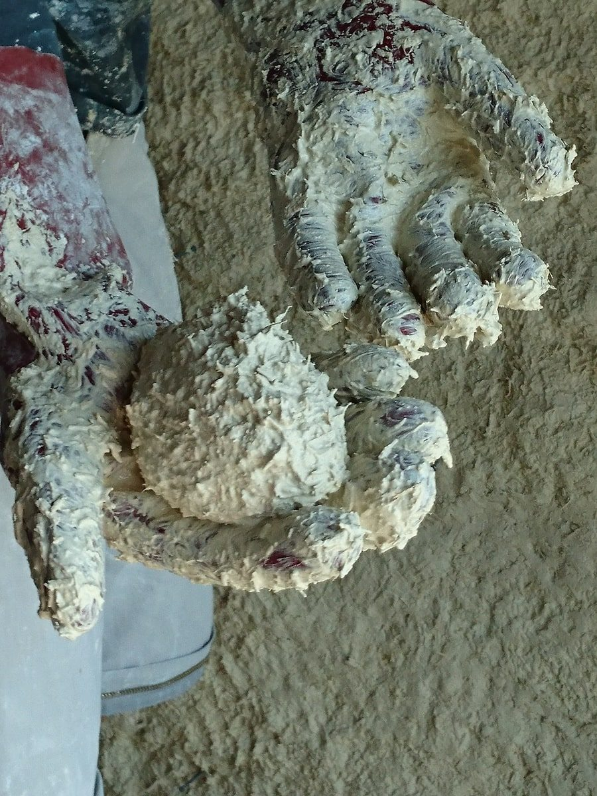
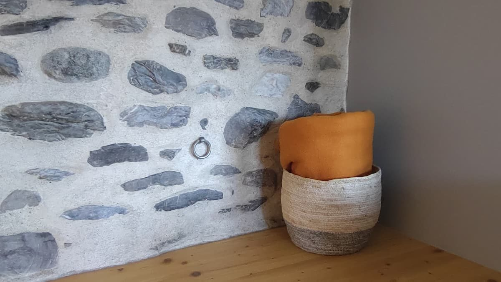
Des matériaux qui respirent
Les sartôts ont été rénovés avec des matériaux biosourcés : la pierre d’origine, des enduits chaux et chanvre, du bois et du métal. Une partie des enduits a été posée à la main.
Le résultat : des intérieurs chaleureux, intimes et spacieux, chacun avec son caractère.
Ce que la maison vous offre
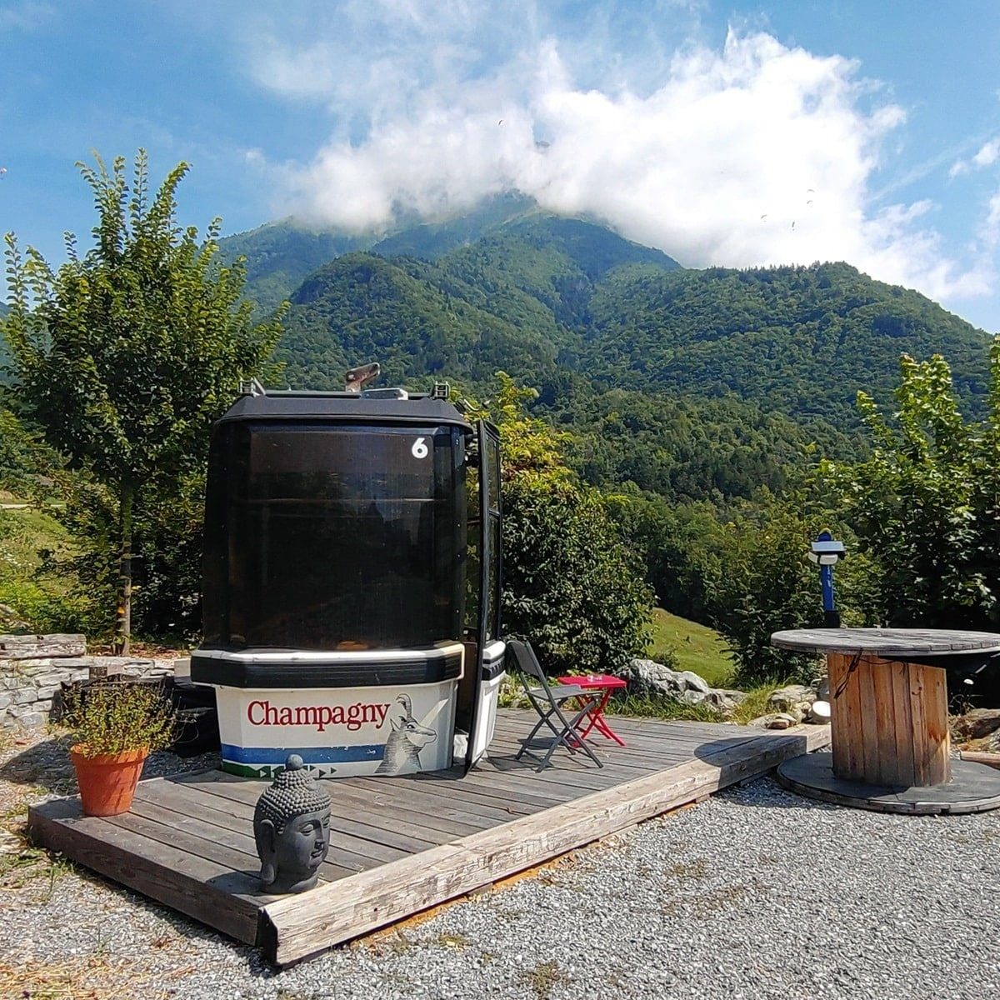
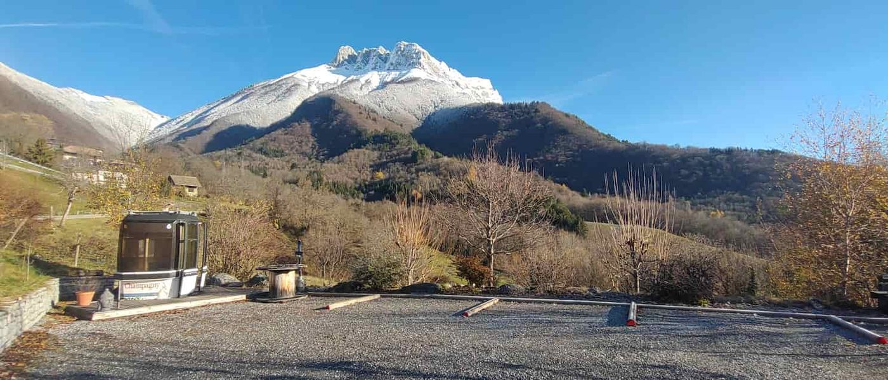
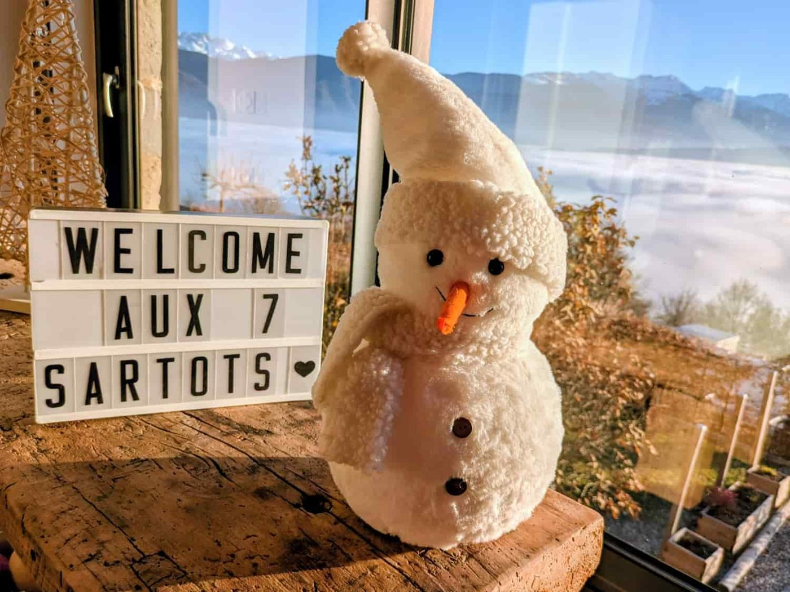
Une télécabine dans le jardin
Toute la propriété est non-fumeur. Pour les fumeurs, une vraie cabine de remontée mécanique a été posée dans le jardin, face aux montagnes : la télécabine des 7 Sartôts.
Les 7 Sartôts, hier et aujourd’hui
Choisissez votre sartôt
 Pour 2, le plus intime
Pour 2, le plus intimeL’Écurie
Un nid douillet avec son poêle à bois et sa grande terrasse plein sud.
 Pour 2, le plus minéral
Pour 2, le plus minéralLe Pressoir
La pierre apparente, la chaux et une terrasse ouverte sur la piscine.
 Pour 2 ou 3, spacieux
Pour 2 ou 3, spacieuxLe Guesthouse
De l’espace, du cachet, un poêle à bois et un jardin avec vue.
 Jusqu’à 7, le plus grand
Jusqu’à 7, le plus grandCloudelin
Quatre chambres, deux salles de bain : le meilleur volume pour un petit groupe.